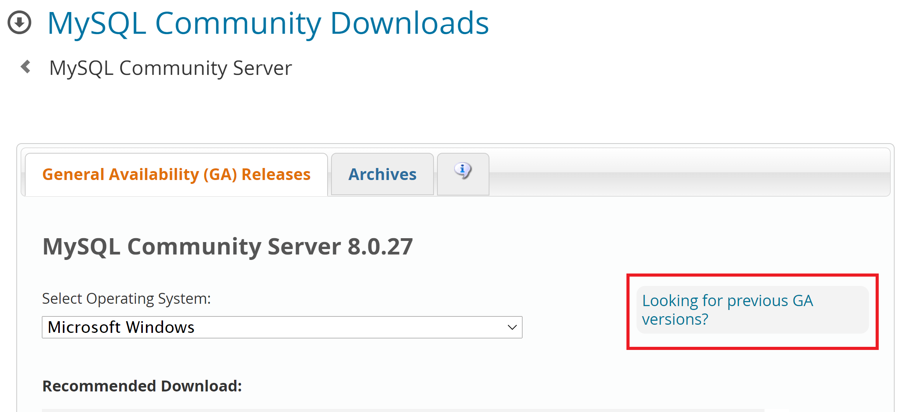
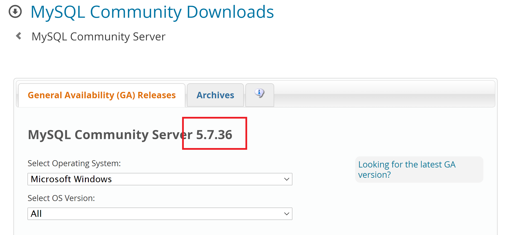
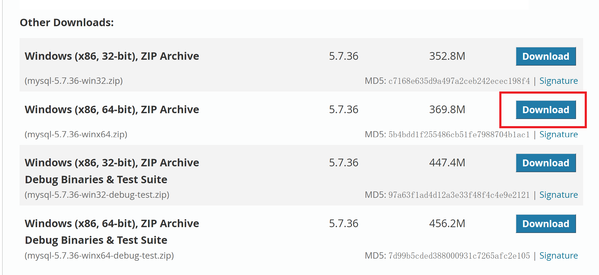
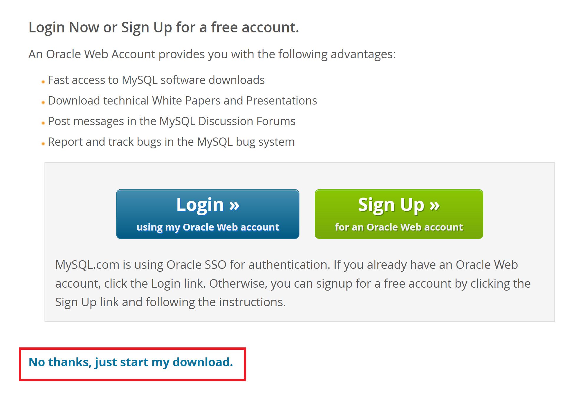
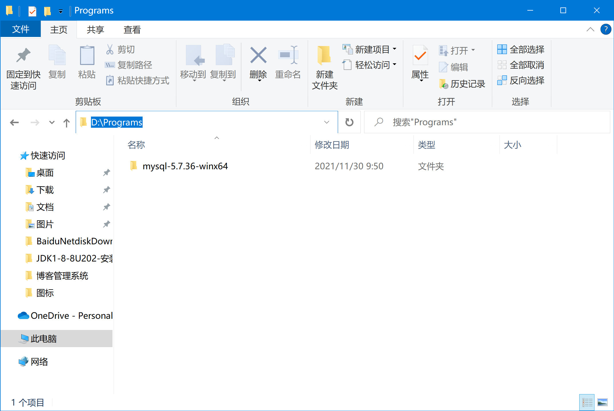
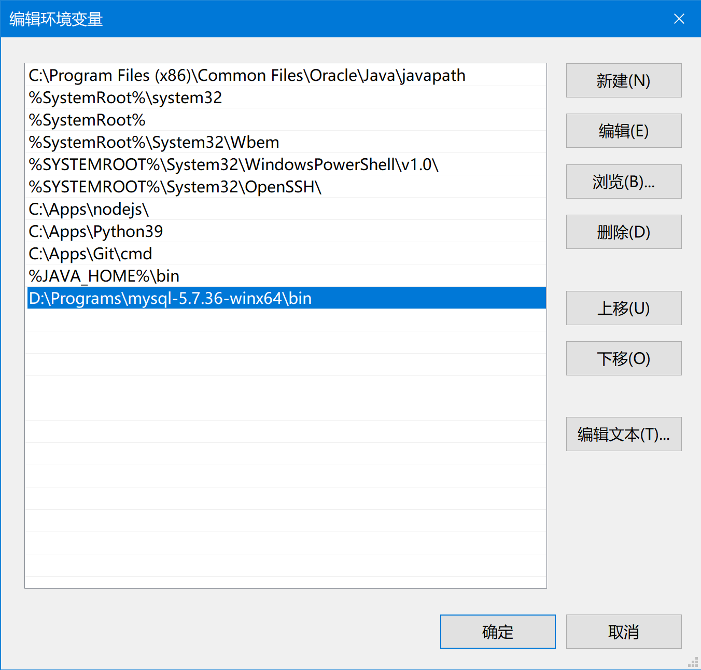
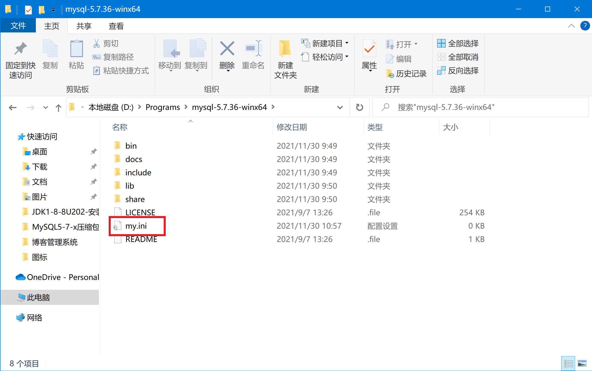

MySQL5.7.x压缩包版安装教程
MySQL5.7.x压缩包版安装教程
MySQL是免费的数据库，它比较经典的版本是5.7，现在新版本是8.0，这里只介绍5.7的安装方法。
下载
到MySQL下载页面后选择“Looking for previous GA versions?”，如下图:

会跳到5.7.x的界面：

向下滚动鼠标，选择64位版本下载：

跳转页面选择“No thanks…”

安装
安装前准备
下载完成后解压到你想要存放MySQL的目录，比如：

将MySQL的bin目录添加到“系统环境变量”中（不会设置环境变量？）：

进入MySQL的目录，在里面新建一个“文本文档”（也就是txt文件）。将这个文件重命名为“my.ini”（注意这是是包括后缀名的）（不会修改扩展名？）。

右键“编辑”，复制如下内容后保存：1
2
3
4
5
6
7
8
9
10
11
12
13
14
15
16
17[client]
port=3306
default-character-set=utf8
[mysqld]
# 设置为自己MYSQL的安装目录
basedir=D:\Programs\mysql-5.7.36-winx64
# 设置为MYSQL的数据目录
datadir=D:\Programs\mysql-5.7.36-winx64\data
port=3306
character_set_server=utf8
sql_mode=NO_ENGINE_SUBSTITUTION,NO_AUTO_CREATE_USER
#开启查询缓存
explicit_defaults_for_timestamp=true
#默认数据库引擎
default-storage-engine=INNODB
#跳过密码登录
skip-grant-tables
注意： “basedir”后面的内容要改成你的安装目录，“datadir”后面的内容要改成你的安装目录再加“\data”。“skip-grant-tables”是用于跳过密码登录的。
开始安装
“以管理员身份”打开”命令提示符”。
执行如下命令：1
mysqld install
接着执行：1
mysqld --initialize-insecure --user=mysql
启动MySQL服务：1
net start mysql
进入MySQL：1
mysql -uroot -p
提示输入密码，不用输入，直接回车。
进入后输入以下命令修改密码：1
UPDATE mysql.user SET authentication_string = PASSWORD('新密码') WHERE user = 'root';
输入以下命令刷新权限：1
FLUSH PRIVILEGES;
输入以下命令退出：1
exit;
安装后续处理
先停止mysql服务。以管理员身份打开命令提示符后输入：1
net stop mysql
去到MySQL的安装目录修改“my.ini”文件，在“skip-grant-tables”前面加上“#”后保存。
在命令行窗口重新启动mysql服务1
net start mysql
本博客所有文章除特别声明外，均采用 CC BY-SA 4.0 协议 ，转载请注明出处！